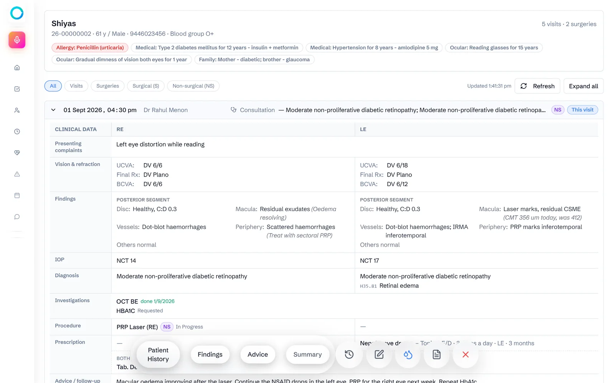
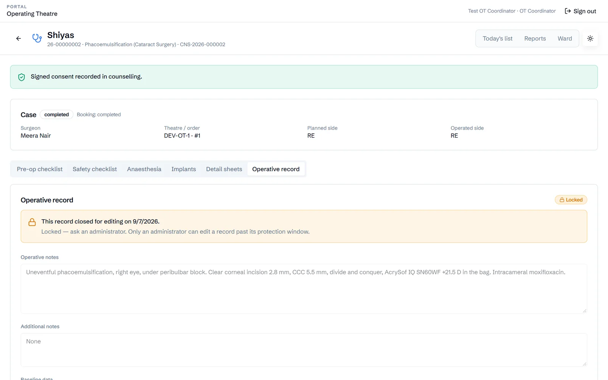

Hospital software for eye care
One record for every eye, from the front desk to discharge.
Ophia runs an eye hospital in one system. Front desk, eye tests, doctors, nurses, surgical counselling, theatre and ward all work in the same patient file. The safety checks surgery needs are built in.
Every screen on this page is the real software, recorded on demo patients.

Why Ophia
Eye hospitals outgrow paper files and general hospital software.
An eye patient's day crosses six or more desks. Each desk records something the next one needs, usually on paper or in a system that was not designed for eyes.
Two eyes, every field
General software stores one value where an eye clinic needs right and left eye readings, refraction, eye pressure and drawings. Doctors end up writing in free text, or on paper.
The file travels by hand
A surgical patient passes the front desk, eye tests, the doctor, counselling, the ward and theatre. Each step copies details into its own register, and mistakes creep in.
Safety lives on paper
Consent forms, surgical checklists and implant records kept on paper are hard to check before surgery and hard to audit afterwards.
The patient journey
Every step of the visit, in one connected record.
Each desk has its own screen, built around its own work. The patient file moves with the patient, so nothing is re-typed.
Register
Front desk registers, books the doctor's slot and runs the wait list.
Eye tests
Optometry records vision and refraction. The lab and scans run their own queue.
Consultation
The doctor examines both eyes, diagnoses, orders tests and prescribes.
Counselling
Surgery is planned and priced, consent is taken, and the date is booked.
Ward prep
Nurses work through a 13-point ward checklist before theatre.
Theatre
A 20-point pre-op check, a safety checklist, implants and the operative record.
Discharge
The ward prepares the discharge summary, and the surgeon signs it.
Follow-up
The next visit opens with the full history and summary.
Steps 04 to 07 apply only to patients who need surgery. Every other patient goes from consultation straight to follow-up.
Product tour
Built around the people who use it.
Pick a role to see its screens. Click any screen to enlarge it.
See it work
Real screen recordings, not mock-ups.
Each clip was recorded on the software as it runs today, using the demo patients Arjun P and Shiyas.
Made for ophthalmology
Details a general hospital system doesn't have.
Right and left, side by side
Vision, refraction, eye pressure, findings and diagnosis are recorded for each eye. Normal findings take one click, and can be copied to the other eye.
Drawings on eye charts
Doctors draw on charts of the cornea, lids, anterior segment, gonioscopy and fundus. The hospital's own chart set is built in.
Eye diagnosis codes, offline
ICD-10 eye codes can be searched instantly from the hospital's own list, with no internet needed.
Prescriptions that add up
Eye-drop tapers always fit inside the course length. Each patient gets one prescription per day, even when several doctors see them.
Implant traceability
Every lens implanted is logged with its model, power, serial number, lot and expiry date.
Nothing typed twice
Anything already recorded at another desk is filled in for you, and you can still edit it. The surgical safety checklist is never pre-filled.
Safety and trust
Checks are built into the workflow, not left on a clipboard.
Theatre waits for the ward
The pre-op checklist only opens once the ward checklist is complete, and surgery can't start without recorded consent.
Records lock after a set time
After a set editing window, clinical records lock. Only an administrator can reopen them, and must give a reason.
Each role sees its own work
Portals and permissions follow the job. For example, ward nurses can write operative notes, but only the surgeon can change the case itself.
Phone uploads expire
Each QR upload link is signed for one patient and expires in 15 minutes. Files go into the record, not into staff phones' chats.

Where we are
What is built, what is in review, and what comes next.
Status as of 26 October 2026.
| Area | Status | Detail |
|---|---|---|
| Front desk, eye tests, investigations, doctor and nurse portals | Built | The daily outpatient workflow, from registration to prescription. |
| Surgical pathway: counselling, theatre and ward | Built | Booking, consent, checklists, anaesthesia, implants, the operative record and discharge. |
| October release | In code review | QR uploads, the new pre-op and ward checklists, the operative record in theatre and ward, ICD-10 search, taper prescriptions and the patient summary. |
| Patient app | Awaiting approvals | Built. Online payments are waiting on Razorpay approval, and SMS log-in on TRAI DLT registration. |
| On-site installation, migrating old records, speed improvements | In final testing | Lets a hospital run Ophia on its own server and bring its existing records across. |
| AI assistants | Planned | See the roadmap below. Voice input and Ophia Insights are already in the consultation screen. |
Roadmap
From a working product to a hospital going live.
Go-live readiness
- Finish review and release the October update
- Secure file downloads for uploaded records, open to signed-in staff only
- On-site installation with automatic backups to the hospital's NAS
Patients online
- Online payments through Razorpay
- SMS log-in and appointment reminders
- WhatsApp updates for patients
AI that saves time
- AI scribe that drafts the consultation note for the doctor to check
- Reading old paper records into the patient file
- Prescriptions in the patient's own language
How it runs
Runs in the browser, on a desktop app, and on a phone for uploads.
In the hospital
Ophia can run on a server inside the hospital, with backups to a network drive. Patient data stays on site.
On every desk
Staff use it in a web browser or as a Windows desktop app. Phones are needed only to scan QR codes and upload photos.
Open and modern
Built on Django and Next.js with a PostgreSQL database: standard tools that any good engineering team can maintain.